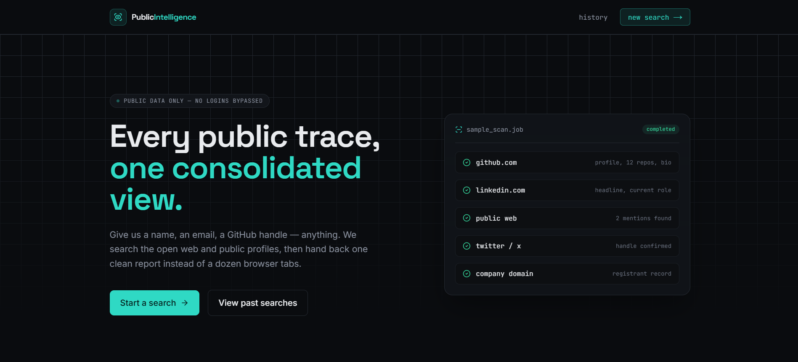
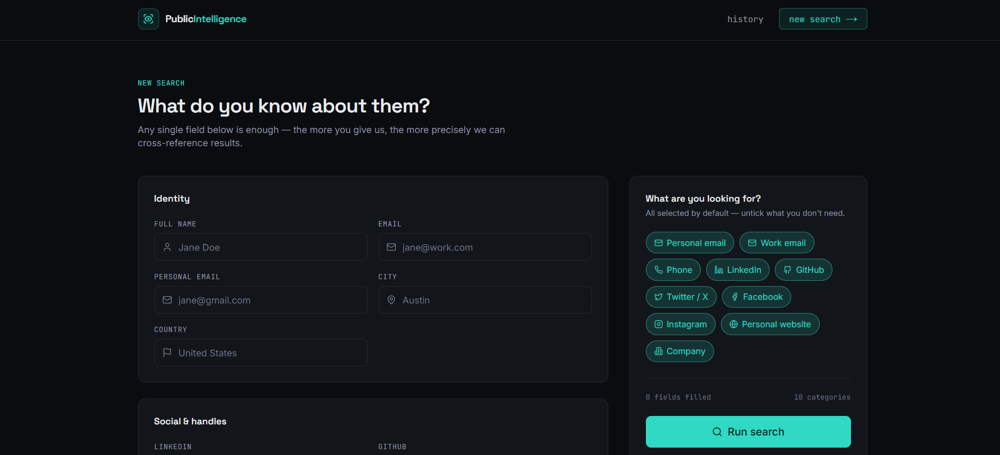

Open source · public data only
Every public trace,
one consolidated view.
Public Intelligence brings public web research, GitHub profiles, domains, and social links into one organized report—without bypassing logins or private access controls.
Built for responsible research
Useful context, clear boundaries.
Submit a public identifier such as a name, email address, company, or GitHub handle. Background workers collect public-source results, then organize them by category and source.
The project is designed for lawful, authorized research. It does not bypass authentication, paywalls, or private data controls.
Product preview
Research without the tab overload.


How it works
From a starting clue to an organized report.
- 01Provide public identifiers
Start with any available public detail.
- 02Run background collection
FastAPI, Celery, Redis, and collectors work asynchronously.
- 03Review source-linked results
Results remain grouped, traceable, and best-effort.
Contributors welcome
Help make public-data research more responsible and useful.
Feedback, tests, documentation, security improvements, and focused features are welcome. Start with the contribution guide or an open issue.
Read contribution guide